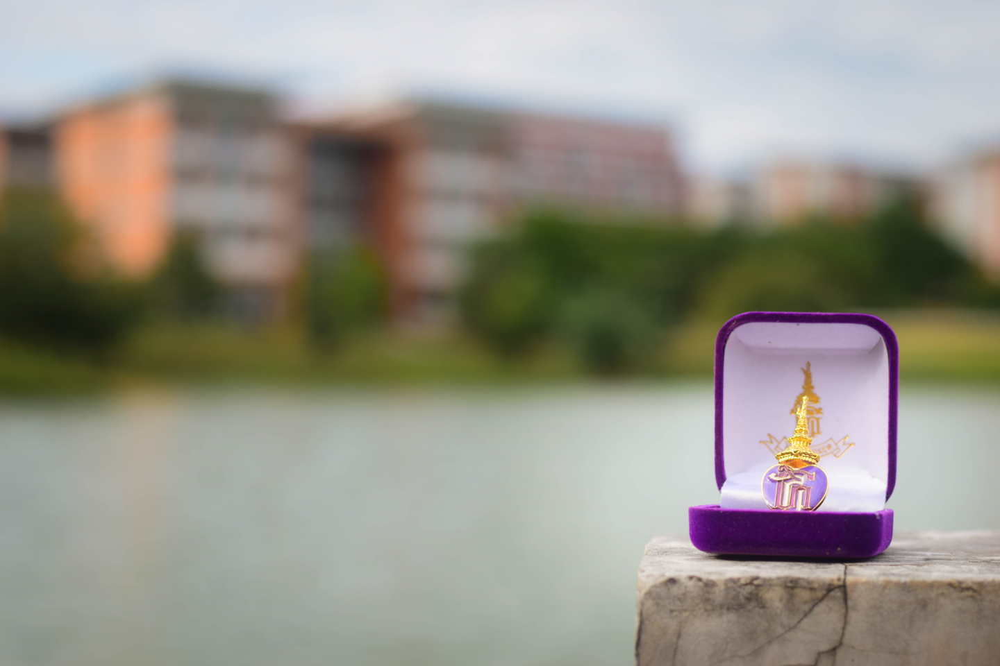
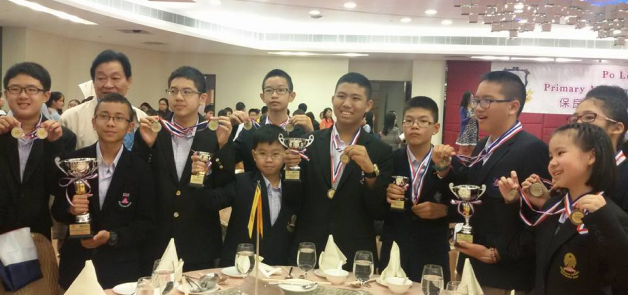

Hi! My name is Vetit. ☺️
Data Science Student >.Coder
Contact MeSkills


Machine Learning
I have 3 years of experience on computer vision such as Medical Imaging, License Plate Recognition, Documents OCR, Basic Classification Problems. This also includes Regression Problems, Decision Trees, Future Prediction, Face Detection, Human-Pose Recognition etc.

Web development
My project towards Web Development are built on React As a front-end frameworks, Node.JS as a backend which mostly use Firebase as a Non-SQL Database and Web Hosting, Supabase as a SQL database, and Rest API as a connector between front and back. I just started since 2022 and I am eagerly learning new aspect upon this field.

Data Analytics
As next year, I am graduated from B.Sc. Data Science, I have lots of classwork for data analytics from variety of datasets.

Programming
I have been coding in Python, Javascript for two years in several projects including Machine Learning and Web Development; also, some experience towards C++ and Java in class work.
Research
OCTAve: 2D en face Optical Coherence Tomography Angiography Vessel Segmentation in Weakly-Supervised Learning with Locality Augmentation
Weakly-Supervised Deep learning Models for Retinal Vessel Segmentation using GAN-based and Attention Mechanisms. This paper is written and published on IEEE Transactions on Biomedical Engineering on year 2023. The paper can be accessed via link below.
IEEE Explore
Experience
Machine Learning Engineer Intern
Working as a Machine Learning Engineer and Developer in SKY ICT PCL. since 2021, mainly creating Computer Vision Models for Security Managements, Facility Managements such as License Plate Recognition (LPR), Document Classifier, Document Optical Character Recognition (OCR), etc.
 SKY ICT PCL.
SKY ICT PCL.

Educations

Habour.Space@UTCC
B.Sc. Data Science
Visit Harbour.Space@UTCC Website Kamnoetvidya Science Academy (KVIS)
Science Boarding High School 3y full scholarships
Visit KVIS WebsiteAchievements

WIZMIC 2014
In 2014, I had participated in Wizard at Mathematics International Competition 2014 (WIZMIC) between 14-22 October 2014, India. I won a Gold medal in Individual Contest, Champion in Team Contest, and Gold medal in Group Contest.
PMWC 2015
Po Leung Kuk Primary Mathematics World Contest 2015 (PMWC 2015) between 12-17 July 2015 at Hongkong, I have been selected to be one of representative of 12 Thai talents participating in PMWC International Mathematics Olympiad and got Gold medal on Individual contest with score of 14 out of 15.

ITYM 2019
I have been selected to be part of KVIS Thai team in the International Tournaments of Young Mathematicians (ITYM) 2019 in Barcelona, Spain. I got honorable mention awards with my team.

4th KVIS ISF
During KVIS, I had 3 years to develop and create a Math or Science project as a graduation requirement in Grade 12. I won Best of Social Inspiration Awards in Environmental Science field.

CANSAT 2019
During Grade 10, I have an opportunity to join CANSAT Thailand which is a small satellites built in can-sized bottle. I made to the final round and became one of the ten finalists.